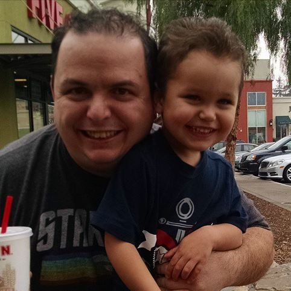
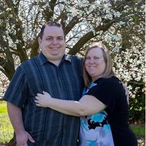
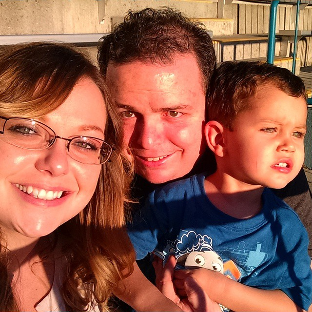

About Nathon
Hello everyone, my name is Nathon Reed and I am a huge Trekkie, Deep Space Nine is my favorite show. I love working on computers and creating websites, listening to Weird Al's music, and drinking Dr. Pepper. I'm a child of the late-eighties, early nineties, so I love old video games. I am engaged and will be getting married in February to my fiance, Cara. We do not have any children yet, except for an adorable fur-child, Lady Ann, a dog that we rescued from the pound. We love exploring nature and hanging out at the beach. I'm an uncle to two amazing kids, JP and Izabella, and I love hanging out with my family.
Developer Nathon
Nate's Web Design is a brand new start up that is going to partner with small, local businesses and churches in my area. I have always loved giving back; I received help from the Boys and Girls Club when I was a teenager and ever sense then I told myself that when I could give back to my community, I would. I have done projects in CSS, HTML, PHP, MySQL (and non SQL MongoDB), Ruby/Ruby on Rails, NodeJs and Java Script. I pride myself on wanting to learn about other ways of coding, Check out my treehouse profile. I have an Associate's Degree in computer programming and I would love to go back to school to get my Bachelor's degree.
Family Life of Nathon
My family is the most important thing in my life. I work to live; I don’t live to work. I’m engaged to my amazing fiancé, Cara and we plan on getting married in February. Even though I’m six years older, my sister and I are very close and we hang out frequently. I have a niece Izabella and a nephew Jon Paul that I adore. I love to go on trips with my extended family and the most recent adventure was to Star Bright Beach and Santa Cruz Beach Boardwalk. I’ve also been to Boise, Idaho with my fiancé’s family and we are currently planning a big barbeque to bring everyone together. “In every conceivable manner, family is the link to our past and the bridge to our future.” -Alex Haley.